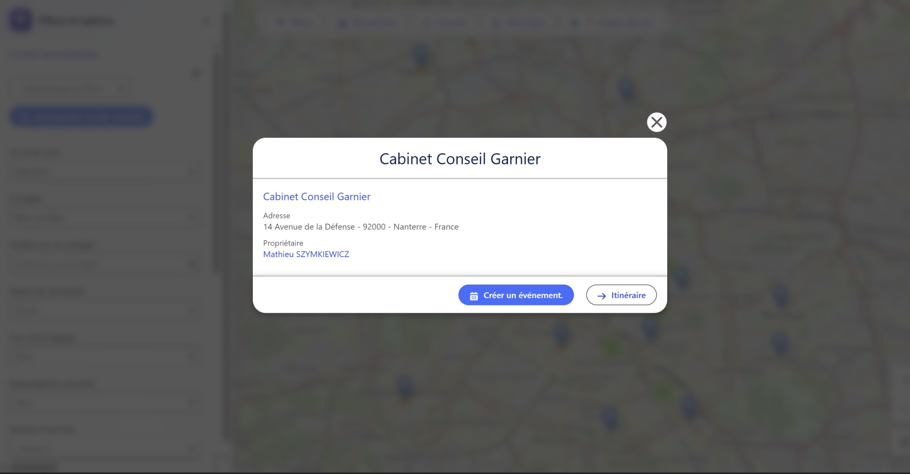
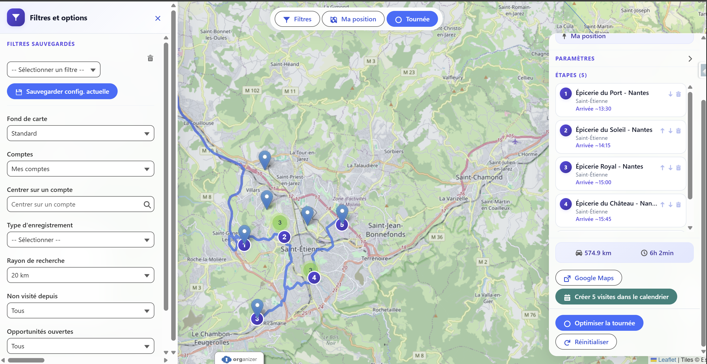
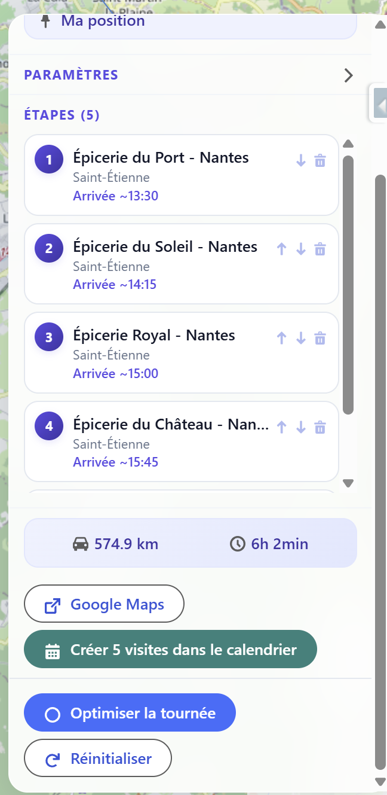
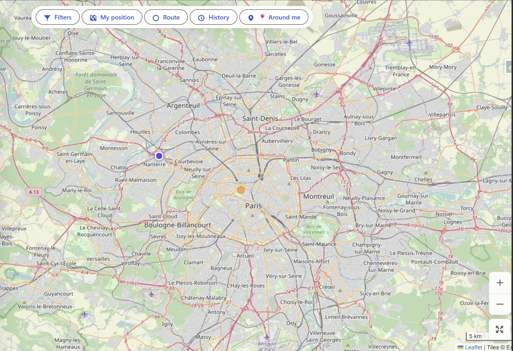
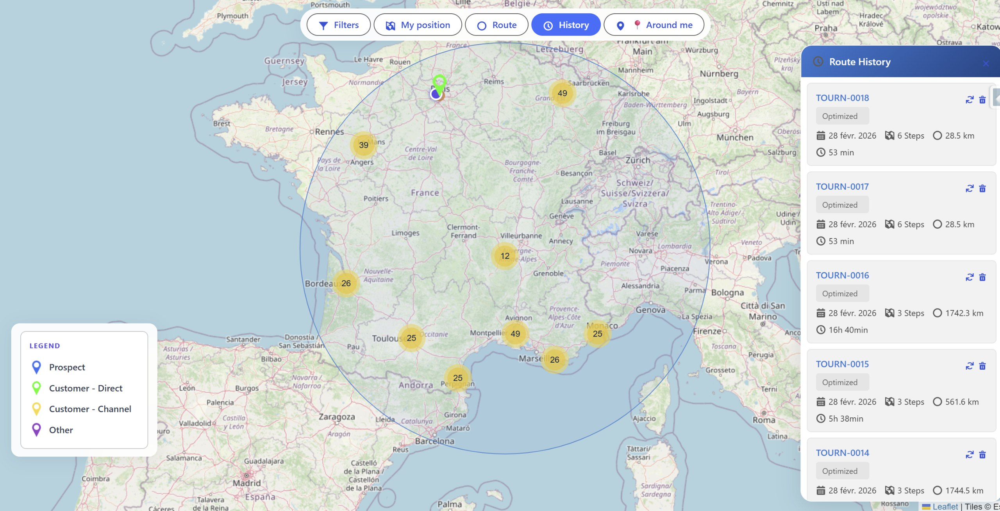
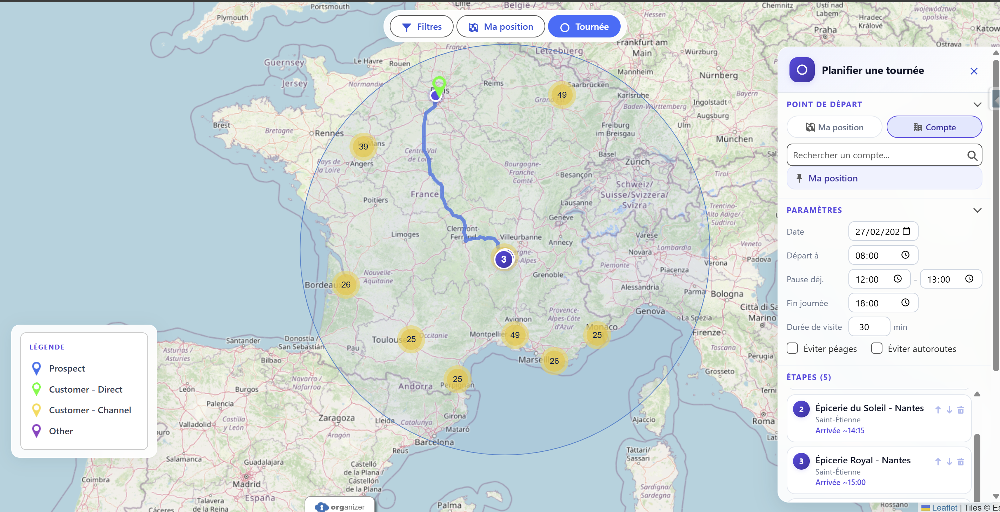
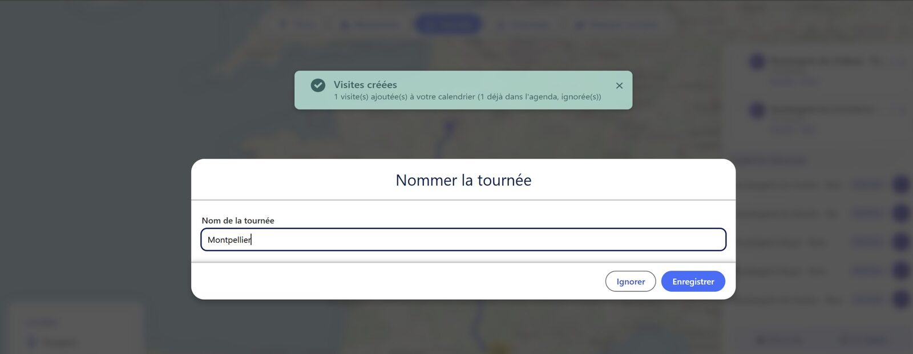

RouteForce en Acción
Descubra la interfaz directamente integrada en Salesforce

Cartographie nationale & segmentation client
Visualice todas sus cuentas Salesforce en todo el país en segundos. La leyenda de colores distingue instantáneamente Prospectos, Clientes directos y Clientes indirectos. El círculo "Around me" indica la zona de influencia alrededor de su posición.

Ficha de Cliente Instantánea
Haga clic en un marcador para ver los detalles de la cuenta: dirección, propietario, última visita. Cree un evento o lance el itinerario sin salir del mapa.

Ruta Optimizada en Tiempo Real
El algoritmo calcula el mejor itinerario teniendo en cuenta sus restricciones: pausa almuerzo, duración de visita, fin de jornada. Trazado directamente en el mapa con las paradas numeradas.

Selección de Cuentas a Visitar
Haga zoom en su sector, haga clic en las cuentas a incluir en la ruta. El panel lateral muestra los parámetros de planificación: hora de salida, pausa almuerzo, fin de jornada, duración de visita. Haga clic en "Optimize route" para lanzar el cálculo.

Cuentas Cercanas — GPS en Tiempo Real
Un toque en el botón 📍 y RouteForce muestra inmediatamente todas las cuentas Salesforce en un radio configurable a su alrededor. Perfecto para improvisar una visita de paso.

Historial de Rutas
Todas sus rutas pasadas guardadas automáticamente. Recargue una ruta de la semana pasada en un clic — distancia, duración y paradas recuperadas instantáneamente.

Interfaz de Planificación Completa
El panel "Plan a route" reúne todo en un solo lugar: punto de partida (posición GPS o cuenta Salesforce), fecha, horarios, pausa almuerzo, duración de visita. La sección "Nearby Accounts" muestra las cuentas cercanas a su itinerario, listas para ser añadidas.

💾 Guarde sus Rutas
Después de planificar y optimizar, nombre y guarde su ruta. Encuéntrela en el historial para re-ejecutarla la semana siguiente — mismo itinerario, mismas cuentas, cero esfuerzo. Ideal para rutas recurrentes.